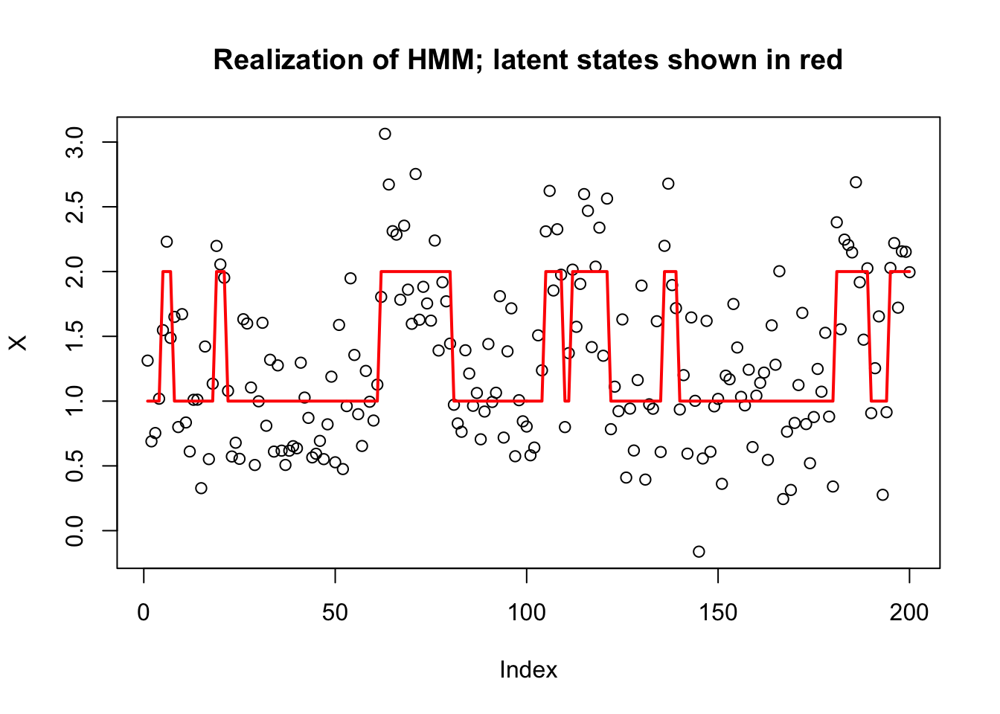
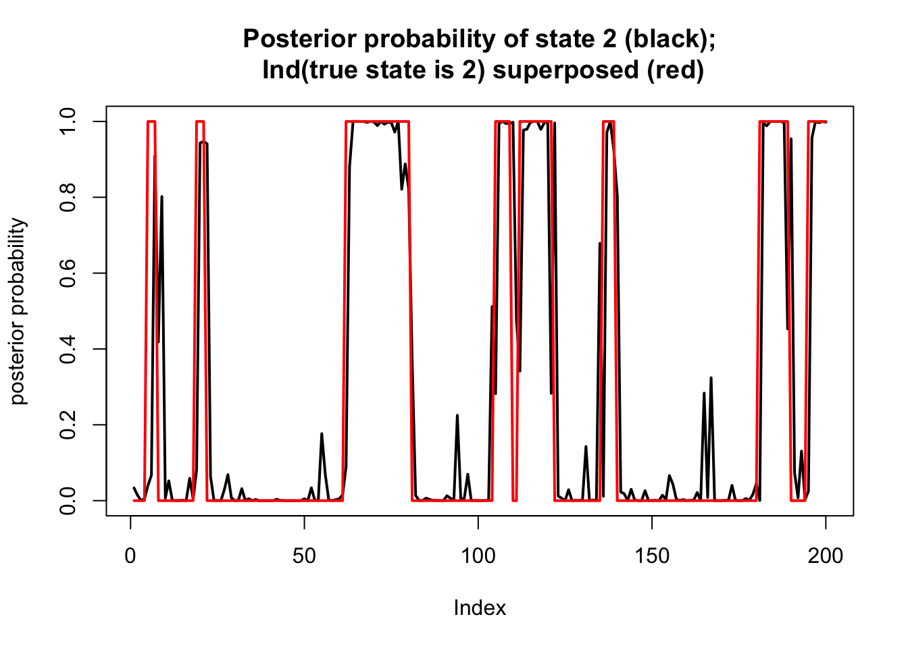

Last updated: 2018-05-21
workflowr checks: (Click a bullet for more information) ✔ R Markdown file: up-to-date
Great! Since the R Markdown file has been committed to the Git repository, you know the exact version of the code that produced these results.
✔ Environment: empty
Great job! The global environment was empty. Objects defined in the global environment can affect the analysis in your R Markdown file in unknown ways. For reproduciblity it’s best to always run the code in an empty environment.
✔ Seed:
set.seed(20180411)
The command set.seed(20180411) was run prior to running the code in the R Markdown file. Setting a seed ensures that any results that rely on randomness, e.g. subsampling or permutations, are reproducible.
✔ Session information: recorded
Great job! Recording the operating system, R version, and package versions is critical for reproducibility.
✔ Repository version: d71546a
wflow_publish or wflow_git_commit). workflowr only checks the R Markdown file, but you know if there are other scripts or data files that it depends on. Below is the status of the Git repository when the results were generated:
Ignored files:
Ignored: .DS_Store
Ignored: .Rhistory
Ignored: .Rproj.user/
Ignored: .sos/
Ignored: exams/
Ignored: temp/
Untracked files:
Untracked: analysis/neanderthal.Rmd
Untracked: analysis/pca_cell_cycle.Rmd
Untracked: analysis/ridge_mle.Rmd
Untracked: data/reduced.chr12.90-100.data.txt
Untracked: data/reduced.chr12.90-100.snp.txt
Untracked: docs/figure/pca_cell_cycle.Rmd/
Untracked: homework/fdr.aux
Untracked: homework/fdr.log
Untracked: tempETA_1_parBayesC.dat
Untracked: temp_ETA_1_parBayesC.dat
Untracked: temp_mu.dat
Untracked: temp_varE.dat
Untracked: tempmu.dat
Untracked: tempvarE.dat
Unstaged changes:
Modified: analysis/cell_cycle.Rmd
Modified: analysis/eb_vs_soft.Rmd
Modified: analysis/svd_zip.Rmd
| File | Version | Author | Date | Message |
|---|---|---|---|---|
| Rmd | d71546a | stephens999 | 2018-05-21 | workflowr::wflow_publish(“hmm.Rmd”) |
This vignette illustrates the computation of the “forwards” and “backwards” probabilities in a Hidden Markov Model (HMM), and their use to infer the (marginal) posterior distribution of the latent state at each location.
To illustrate we simulate a simple HMM with two states, \(Z_t \in \{1,2\}\), and with the emission distributions in state \(k\) being normal with mean \(k\). The transition matrix for the Markov chain is symmetric, with probability 0.9 of staying in the same state, and 0.1 of switching at each step.
Here is some code to simulate from this:
set.seed(1)
T = 200
K = 2
sd= 0.4
P = cbind(c(0.9,0.1),c(0.1,0.9))
# Simulate the latent (Hidden) Markov states
Z = rep(0,T)
Z[1] = 1
for(t in 1:(T-1)){
Z[t+1] = sample(K, size=1, prob=P[Z[t],])
}
# Simulate the emitted/observed values
X= rnorm(T,mean=Z,sd=sd)
plot(X, main="Realization of HMM; latent states shown in red")
lines(Z,col=2,lwd=2)
We define the forwards probabilities as \[\alpha_{tk} := p(X_1,\dots,X_t; Z_n=k) \] So \[\alpha_{1k} = \pi_k p(X_1 | Z_1 = k),\] where \(\pi_k = \Pr(Z_1=k)\). (Here we assume \(\pi=(0.5,0.5)\), which is the stationary distribution of \(P\).)
Further, we can compute \(\alpha_{t+1}\) from \(\alpha_t\) using the forward algorithm: \[\alpha_{(t+1) k} = \sum_j p(X_1,\dots,X_t,X_{t+1}; Z_t=j, Z_{t+1}=k)\] \[ = \sum_j \alpha_{tj} P_{jk} \ p(X_{t+1} | Z_{t+1}=k)\] \[ = (\alpha_{t\cdot} P)_k \ p(X_{t+1} | Z_{t+1}=k).\]
We code this as follows:
# this is the function Pr(X_t | Z_t=k) for our example
emit = function(k,x){
dnorm(x,mean=k,sd=sd)
}
pi = c(0.5,0.5) #Assumed prior distribution on Z_1
alpha = matrix(nrow = T,ncol=K)
# Initialize alpha[1,]
for(k in 1:K){
alpha[1,k] = pi[k] * emit(k,X[1])
}
# Forward algorithm
for(t in 1:(T-1)){
m = alpha[t,] %*% P
for(k in 1:K){
alpha[t+1,k] = m[k]*emit(k,X[t])
}
}Note that the forwards algorithm also allows us to compute the likelihood, \(p(X_1,\dots,X_T)\). Indeed, by definition of \(\alpha\) we have \[p(X_1,\dots,X_T) = \sum_k \alpha_{Tk}.\]
So the likelihood is:
sum(alpha[T,])[1] 1.142681e-65Notice that these alpha numbers can get very small! This can cause numerical issues if \(T\) were larger and we should really be more careful to avoid this! A common strategy is to “renormalize” the \(\alpha\)s at each iteration: that is, for each \(t\) divide the \(\alpha_{tk}\) by \(\sum_k \alpha_{tk}\), and then store the value of this sum separately. Maybe you can work out the details!
We define the backwards probabilities as \[\beta_{tk} := p(X_{t+1},\dots,X_{T} | Z_{t}=k)\]. with the “boundary condition” \(\beta_{Tk}=1\).
By this definition \[\beta_{tk} = \sum_j Pr(X_{t+1},\dots,X_{L}, Z_{t+1}=j | Z_t=k)\] \[= \sum_j \beta_{(t+1) j} \ P_{kj} \ p(X_{t+1} | Z_{t+1} = j).\]
Here is code to compute these values iteratively:
beta = matrix(nrow = T,ncol=K)
# Initialize beta
for(k in 1:K){
beta[T,k] = 1
}
# Backwards algorithm
for(t in (T-1):1){
for(k in 1:K){
beta[t,k] = sum(beta[t+1,]*P[k,]*emit(1:K,X[t+1]))
}
}We are now in a position to compute the posterior distribution on each state.
By the definitions of \(\alpha\) and \(\beta\) we have: \[p(X_1,\dots,X_T; Z_t = k) = \alpha_{tk} \ \beta_{tk}.\] Thus we can now compute the posterior distribution for each \(Z_t\) given the data \(X_1,\dots,X_T\): \[\Pr(Z_t = k | X_1,\dots,X_T) = \alpha_{tk} \beta_{tk}/ \sum_k \alpha_{tk}\beta_{tk}\]
Here we compute this and plot the posterior on top of the “truth” that we simulated
ab = alpha*beta
prob = ab/rowSums(ab)
plot(prob[,2],type="l",ylim=c(0,1), main="Posterior probability of state 2 (black);\n Ind(true state is 2) superposed (red)",lwd=2,ylab="posterior probability")
lines(Z==2,col=2,lwd=2)
sessionInfo()R version 3.3.2 (2016-10-31)
Platform: x86_64-apple-darwin13.4.0 (64-bit)
Running under: OS X El Capitan 10.11.6
locale:
[1] en_US.UTF-8/en_US.UTF-8/en_US.UTF-8/C/en_US.UTF-8/en_US.UTF-8
attached base packages:
[1] stats graphics grDevices utils datasets methods base
loaded via a namespace (and not attached):
[1] workflowr_1.0.1 Rcpp_0.12.16 digest_0.6.15
[4] rprojroot_1.3-2 R.methodsS3_1.7.1 backports_1.1.2
[7] git2r_0.21.0 magrittr_1.5 evaluate_0.10.1
[10] stringi_1.1.7 whisker_0.3-2 R.oo_1.22.0
[13] R.utils_2.6.0 rmarkdown_1.9 tools_3.3.2
[16] stringr_1.3.0 yaml_2.1.18 htmltools_0.3.6
[19] knitr_1.20 This reproducible R Markdown analysis was created with workflowr 1.0.1